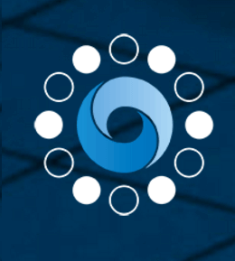
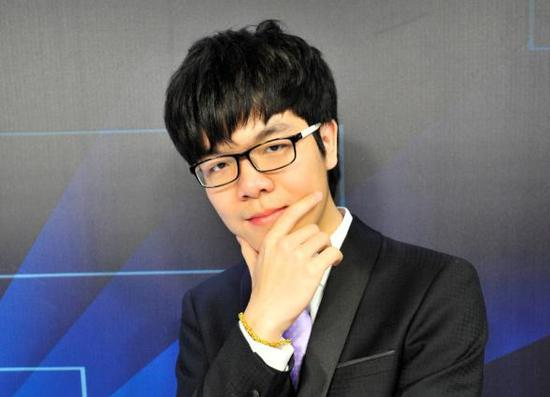
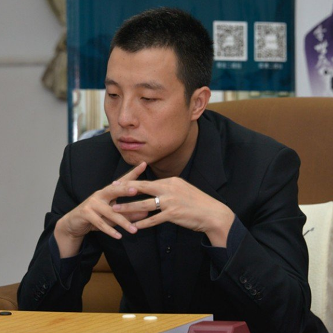

About summit
The Future of Go Summit will be held by Chinese Go Association, Sport Bureau of
Zhejiang Province and Google in Wuzhen, Zhejiang, which is the permanent host place of the World
Internet Conference, in May 2017, featuring five Go games involving AlphaGo and top Chinese Go players,
as well as panels on the future of AI.
3
The game will be played on May 25
6
The game will be played on May 26
7
The game will be played on May 26
8
The game will be played on May 27
9

AlphaGo
AlphaGo is a narrow AI, computer program developed by Alphabet Inc.'s Google DeepMind in London to play
the board game Go. In October 2015, it became the first Computer Go program to beat a human professional
Go player without handicaps on a full-sized 19×19 board. In March 2016, it beat Lee Sedol in a five-game
match, the first time a computer Go program has beaten a 9-dan professional without handicaps. Although
it lost to Lee Sedol in the fourth game, Lee resigned the final game, giving a final score of 4 games to
1 in favour of AlphaGo. In recognition of beating Lee Sedol, AlphaGo was awarded an honorary 9-dan by
the Korea Baduk Association. It was chosen by Science as one of the Breakthrough of the Year runners-up
on 22 December 2016.
11

Ke Jie
Ke Jie is a Chinese professional go player of 9 dan rank. He is currently ranked number one in the world
under Rémi Coulom's unofficial ranking system.
Ke Jie started to learn how to play go in 2003 when he was 5 years old and won his first national
championship in 2007. He became a professional go player in 2008 when he was 10 years old and was
promoted to 9 dan rank in 2015. In January 2015, Ke won his first world title when he won the 2nd
Bailing Cup, defeating Qiu Jun in the finals.
12

Gu Li
Gu Li is a Chinese go player. He became a pro in 1994 when he was only 12. In 2006, he won the 10th LG
Cup and became the youngest Chinese player to ever win a major international title; as a result, he
was also promoted to 9 dan.
His given name Li, literally meaning strength, is also a Go term roughly meaning the ability of reading.
Li also encompasses the meaning of the ability to discover strong moves and the ability to fight. Gu has
a nickname "Gu Da Li". Da literally means large, big or huge. This refers to Gu's incredible ability at
playing really strong moves that require sharp instinct as well as immaculate reading. One of his main
weaknesses is his inaccurate endgame.
13
Ke Jie
Ke Jie is a Chinese professional go player of 9 dan rank. He is currently ranked number one in the world
under Rémi Coulom's unofficial ranking system.
Ke Jie started to learn how to play go in 2003 when he was 5 years old and won his first national
championship in 2007. He became a professional go player in 2008 when he was 10 years old and was
promoted to 9 dan rank in 2015. In January 2015, Ke won his first world title when he won the 2nd
Bailing Cup, defeating Qiu Jun in the finals.
14
Gu Li
Gu Li is a Chinese go player. He became a pro in 1994 when he was only 12. In 2006, he won the 10th LG
Cup and became the youngest Chinese player to ever win a major international title; as a result, he
was also promoted to 9 dan.
His given name Li, literally meaning strength, is also a Go term roughly meaning the ability of reading.
Li also encompasses the meaning of the ability to discover strong moves and the ability to fight. Gu has
a nickname "Gu Da Li". Da literally means large, big or huge. This refers to Gu's incredible ability at
playing really strong moves that require sharp instinct as well as immaculate reading. One of his main
weaknesses is his inaccurate endgame.
15